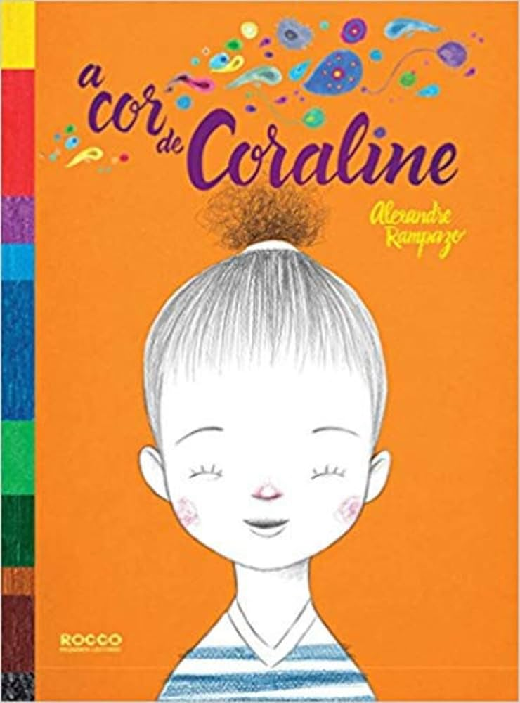

A Cor de Coraline
Coraline ouve do amigo Pedrinho o pedido “me empresta o lápis cor de pele?” e fica intrigada: qual é, afinal, a cor da pele? Ao revisitar sua caixa de lápis, ela descobre que cada tom é bonito e que é a diversidade que dá beleza ao mundo. Vencedor do Selo Seleção Cátedra 10 Unesco e finalista do Prêmio Jabuti 2018, o livro de Alexandre Rampazo propõe uma conversa sensível sobre identidade, diversidade e pertencimento desde a primeira infância.